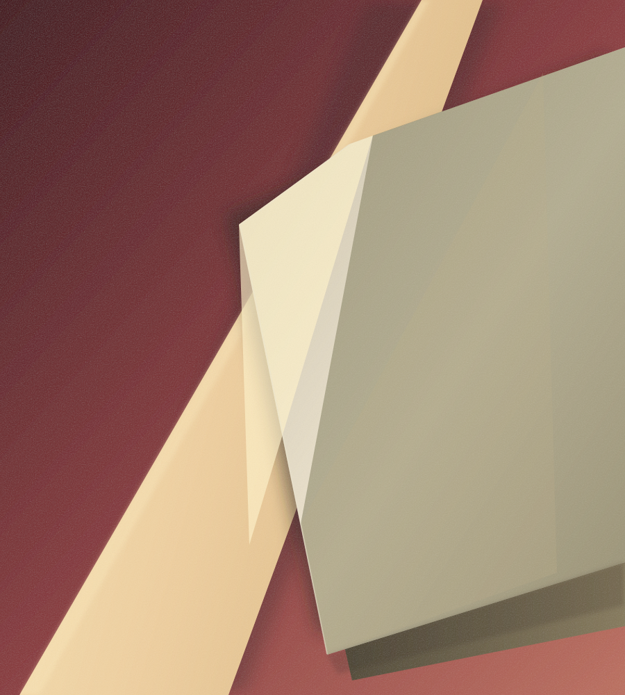

FRESTA
UMA CASA EM PINHEIROS
Uma pausa.
Um bom almoço.
A cozinha de Carol Albuquerque,
de portas abertas para Pinheiros.
Rua Simão Álvares, 447
Pinheiros · São Paulo

Boa cozinha.
Pouca cerimônia.
POR CAROL ALBUQUERQUE
O Fresta é a primeira casa independente de Carol Albuquerque. Uma cozinha autoral em um lugar onde se pode chegar perto.
Depois de passagens pelo Maní, Chez Claude e Taraz, Carol abriu seu próprio endereço na Simão Álvares. A cozinha aberta aproxima quem prepara de quem senta à mesa.
Em maio de 2026, o Fresta passou a concentrar sua operação no almoço.
02 / A CASA
A rua faz
parte.
Na Simão Álvares, a fachada se abre para a calçada. Lá dentro, bar e cozinha dividem o espaço com as mesas.
Foi assim que o Fresta nasceu em Pinheiros: próximo da rua, com a cozinha à vista e sem muita formalidade.
Acompanhe a casa , abre em nova aba03 / OUTROS OLHARES
O Fresta
na imprensa.
Algumas leituras sobre a casa,
a cozinha e seus primeiros capítulos.
ENCONTRE A CASA
Rua Simão Álvares, 447Pinheiros, São Paulo
ANTES DE VIR
Confira os dias e horários de funcionamento diretamente com a casa antes de vir.
Informações atualizadas no canal oficial, abre em nova aba